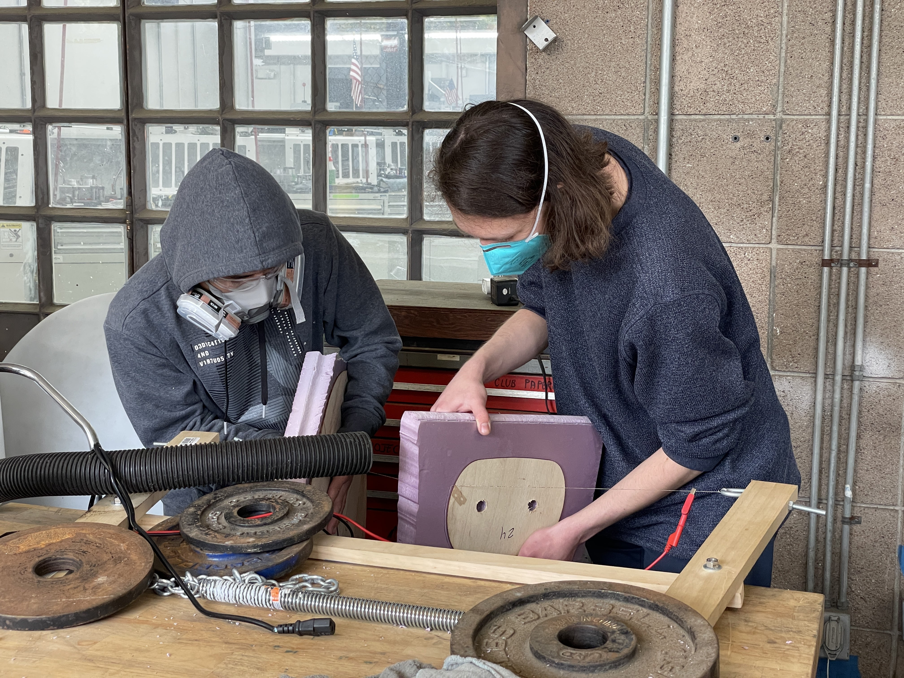
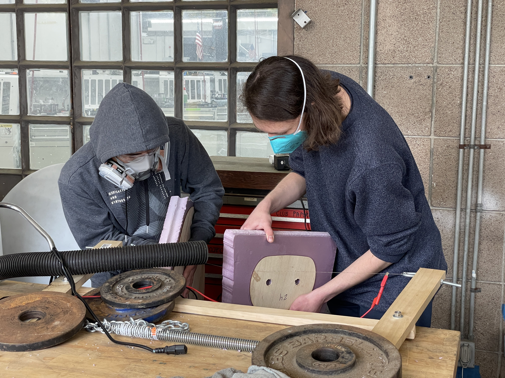
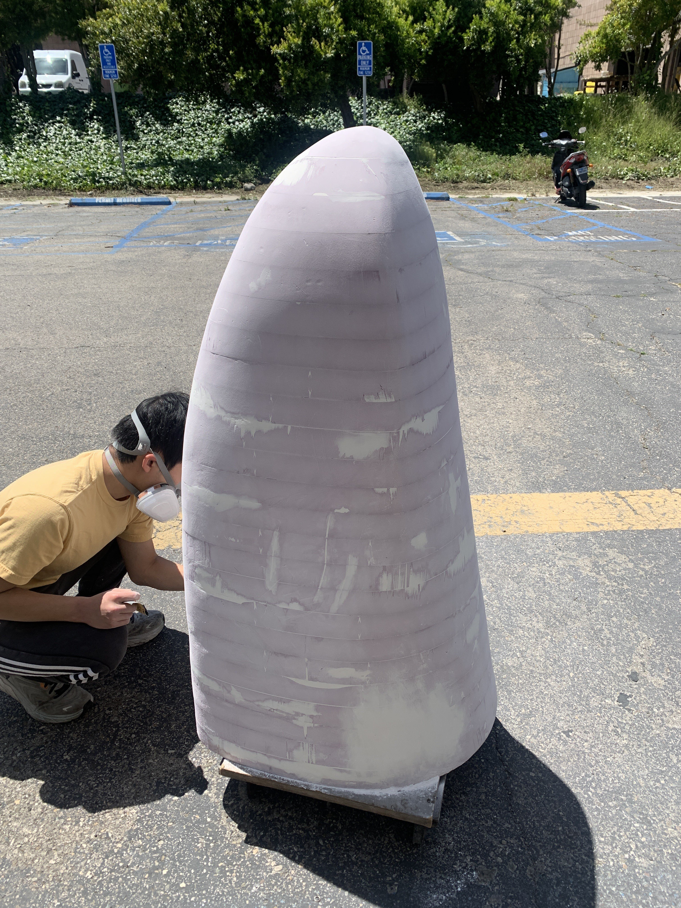
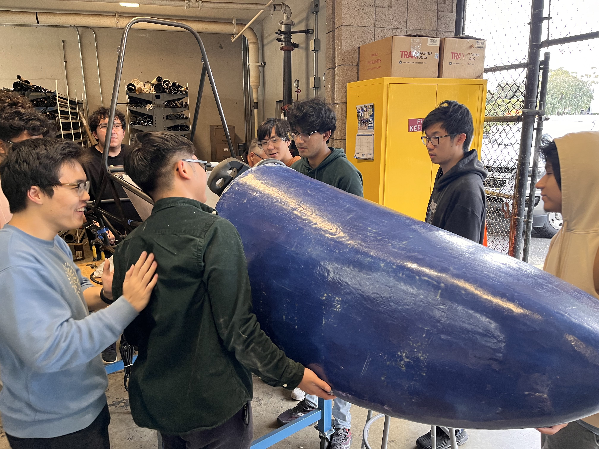
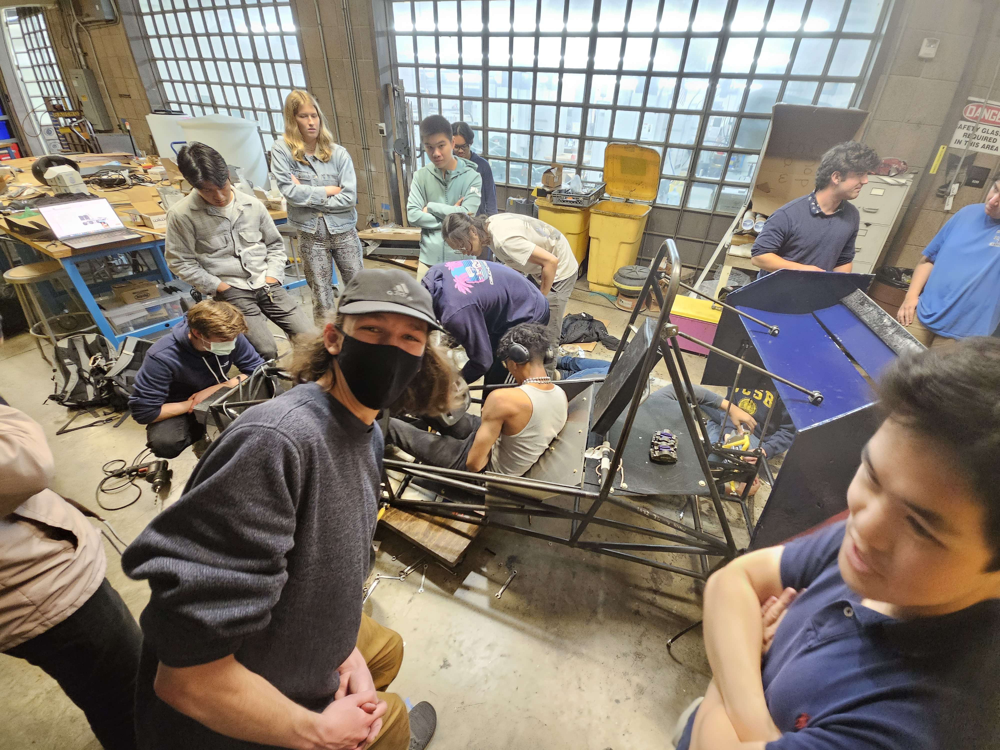
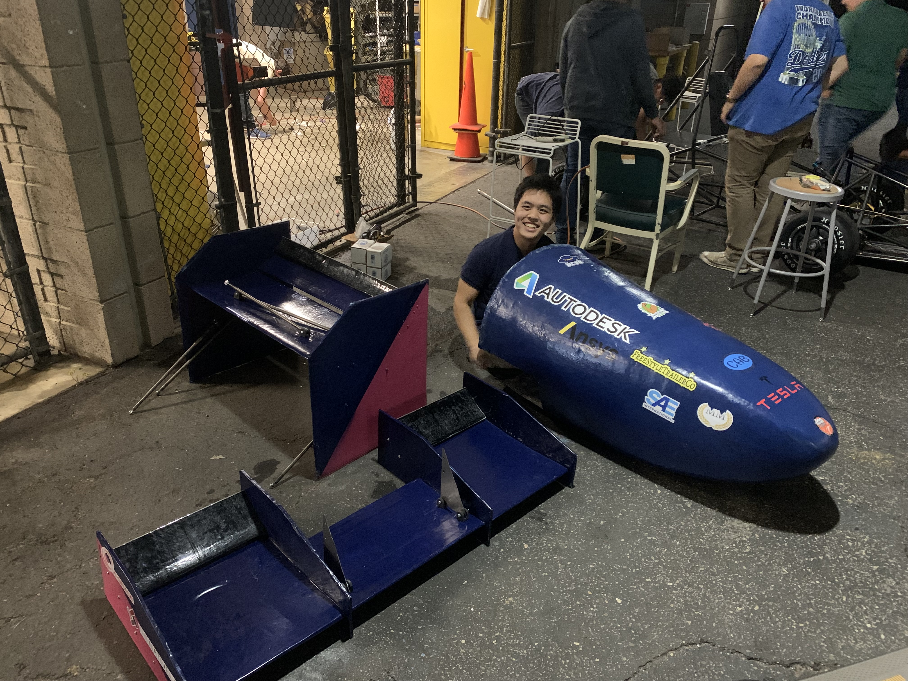

Formula SAE - Gaucho Racing
 

Joined the aerodynamics team during the first year that the club planned to compete. We did a lot of research and created a goal of making a barebones aerodynamics packagage for our first year.
At the start of the year and the summer before my freshman year we began doing 2D CFD simulations in Ansys, learning about meshing and how to get decent results. Eventaully we began simulating different airfoils in the expected conditions of our car and creating a list of possible airfoils to use. We also tried out multi element simulations and saw a fair increase in downforce compared to drag.
We were also researching how to manufacture these elements at low cost and without a lot of tools. Based on these two constraints we went with doing a fiberglass wet lay up over a foam core that we would cut using a hot wire cutter we made ourselves. This process took a lot of trial and error as we kept making mistakes in cutting the airfoil profiles and in our layups. It was really difficult to get a nice edge on the foam using two wooden airfoil guides as the middle of the wire of the hot wire cutter lagged behind quite a bit so the middle section of the wing edge was almost entirely done freehand. Our layups also had a lot of issues as we either put too much or too little resin or fiberglass. However, after 5 or so small tests we were relatively good at cutting the foam and then performing the layup.
After we finalized our front and rear wing elements we made plywood stencils on the lasercutter and began cutting the foam with out hot wire cutter. We also did the same thing for our nose cone, which was essentially a Riemann sum of 2" foam board that we then sanded smooth and filled with bondo. We failed multiple times to cut the foam cores for the smaller elements so I suggested just 3D-printing them, and they turned out pretty good.
 We then did layups on each wing and the nosecone and vacuumbagged them. I think they turned out pretty good for all of our inexperience, however our mounting left a lot to be desired. Our threaded inserts were poorly secured to the wing endplates and even though we had a wooden spar running along the front wing the entire assembly still drooped. We will definetly put a lot more emphasis on mounting next year.
You can see our finished 2023 Gaucho Racing aero package below:
